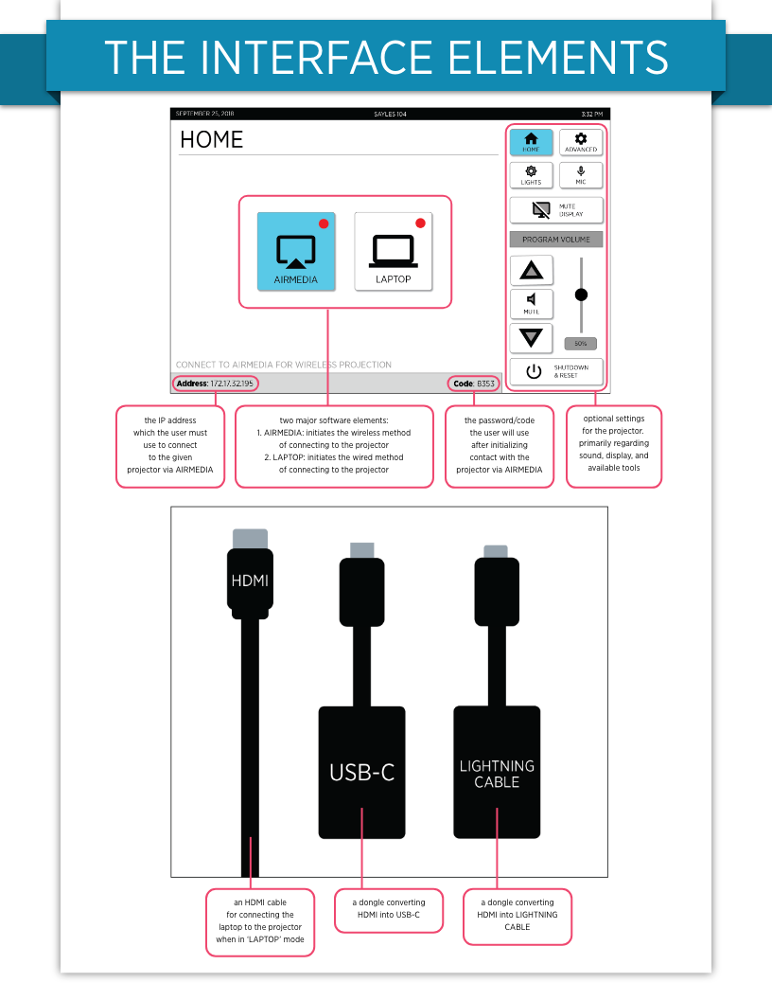
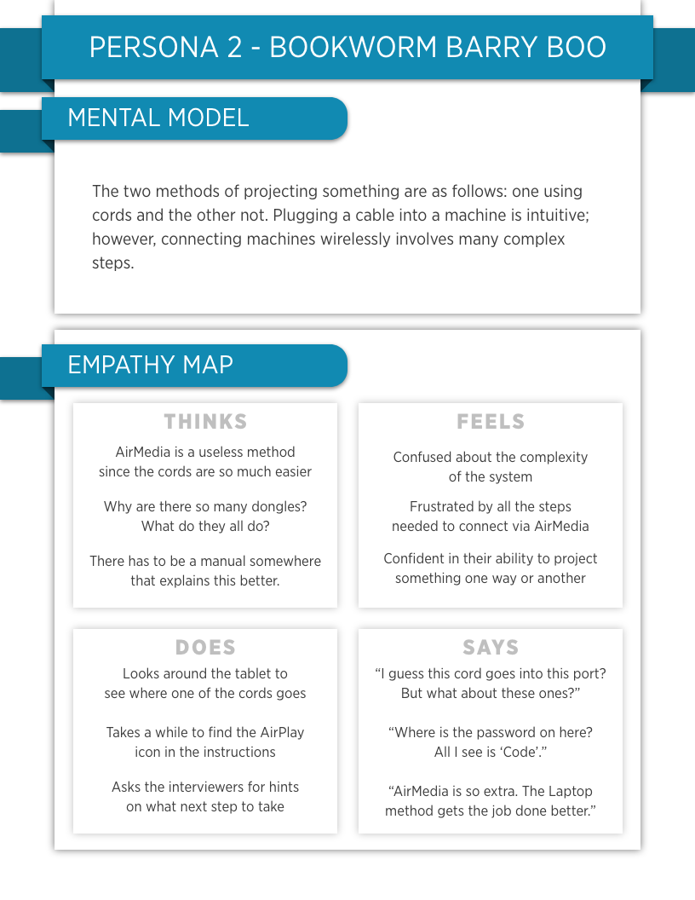
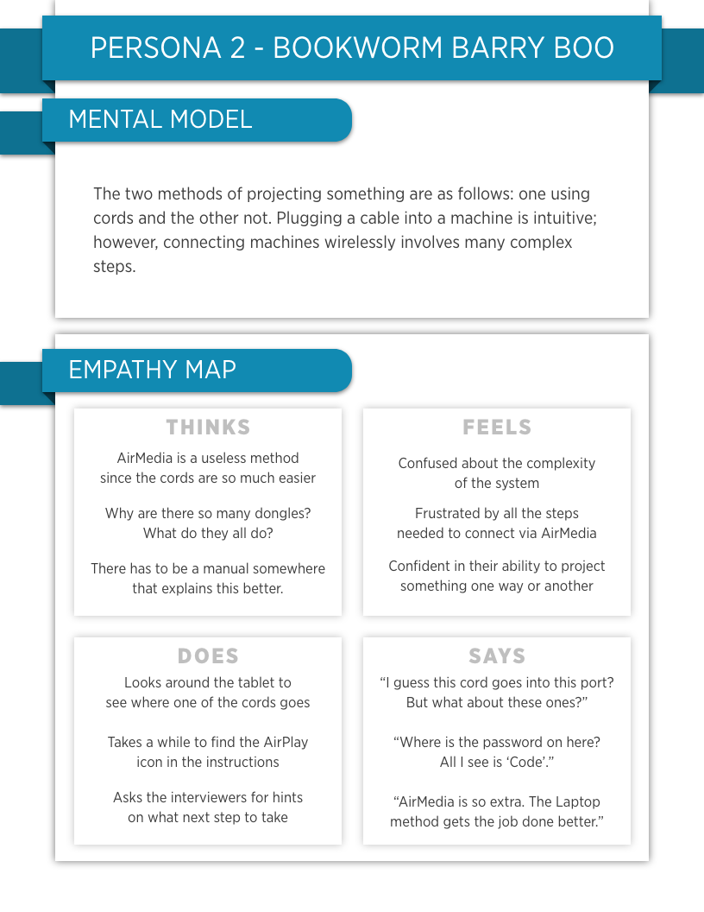

PERSONAS & STORYBOARD
The projectors in Sayles Hall at Brown University are supposed to do as their name implies: project some sort of image or video from a computer screen to a projector screen. There are two methods for doing this, one wired and the other wireless. The former method is relatively intuitive; however, the latter is far more complicated and lacks practical affordances. The goal for this project is to collect qualitative data and curate two personas presenting differing mental models as well as to create a single storyboard going through an imagined scenario of one of those personas. This project was completed as an assignment for the class User Interface / User Experience (CSCI1300) at Brown University to showcase familiarity with the methodologies for curating user-interface personas and storyboards.
Background
The interface consists of two separate connection methods. The first is labelled “Laptop” which requires the user to physically connect their device to the projector unit via an array of cords and dongles. This option is only useful for those with compatible devices and close-range connections however. To combat this, the second method — titled “AirMedia” — utilizes a wireless connection alleviating any physical constraints such as device incompatibility and distance. The interface elements and steps are depicted below.
Interface Elements
How the Interface Works

Research Methodology
To collect data, my partner and I reached out to 6 different people from varying communities to come in, answer some questions, and operate the machinery. We began with 4 pre-task interview questions to retrieve baseline information to aid us in developing mental models. Shortly afterwards, we had the interviewee attempt to project an image from a control computer used throughout all interviews using both the “Laptop” and “AirMedia” methods. Once completed, or once they have given up on the task, we asked 4 post-task questions to retrieve more information on their ideas of the interface after using it. Observations were made throughout the entirety of the session. All of the questions asked are listed below:
Pre-Task Questions
- How many times have you personally operated a projector so far this school year?
- What do you personally use projectors for? You may select multiple answers:
- To give presentations
- To facilitate collaboration on projects
- To watch movies or play games
- Other
- What type(s) of media do you consume through projectors? Lectures? Presentations? Leisure?
- How do you think this projector works? Can you discern any key elements or features?
Post-Task Questions
- After trying both methods of projections, which would you say you prefer and why?
- AirMedia way because…
- Laptop way because…
- No preference because…
- What were some things about the interface that bothered you? Did you notice any “pain points”?
- (Again) How do you think the projector works? Can you discern any key elements or features?
- Do you have any further questions, concerns, or comments?
General Findings
Following data collection, the information was condensed and generalized into two types of responses from two different types of personalities. The first personality, named Techie Tarry, encapsulates the responses of those that felt comfortable or familiar with the interface or similar technologies. The second, named Bookworm Barry, generalizes the responses of those that felt uncomfortable or unfamiliar with the technology. It should be noted that this dichotomy is extremely generalized; they are mainly used to denote the main differences found amongst the interviewees. The summarized responses for the two fabricated personalities are written below:
Interviewee 1: Techie Tarry
Techie Tarry has used projectors like this in the past, though not recently. They have a wealth of knowledge of modern technology and feels comfortable navigating new interfaces. They see the benefits of both wired and wireless media, and know where to look for troubleshooting help when needed.
Interviewee 2: Bookworm Barry
Bookworm Barry has seen projectors used in different settings like classes and group meetings, but has almost never operated one themself. They do not keep up with modern technology much and is more comfortable using familiar machines.
Key Observations
Condensing the data retrieved into main points and important patterns is helpful for deciding what steps need to be taken to improve the system. Listed below is the information deemed most important.
Main Points
- The wording on the tablet does not match that on the screen with the AirMedia method.
- The title of the “Laptop” method is vague but still indicated its relations to the supplied cords.
- Respondents typically were aware that there was both a wired and wireless method.
Important Patterns
- Projectors usually used in limited (primarily academic) settings; therefore, exposure to the interface is limited.
- The “Laptop” method was consistently deemed easier and more intuitive than the AirMedia method.
- AirMedia method consistently deemed annoying and complicated because of poor practical affordances.
Personas
Humanizing the two personalities generalized above into client personas will help in improving the system to account for different types of users. Below are fabricated personas that portray different mental models and empathy maps.
 

Storyboard
An imagined storyline highlighting a potential use-case is presented below. The focus is on a situation where Bookworm Barry, the one least confident in their ability to use the system. This persona was chosen specifically because of the low comfort level with the machinery as this type of user should be of most importance when developing new iterations of the interface.

Takeaways and Next Steps
The broadest takeaway from this study shows that the wireless method (AirMedia) is non-intuitive to some users and thus needs to be redesigned. The redesign should focus on retaining consistency across all devices and screens as well as offering more practical affordances to aid a new user throughout the process. Some ideas for the redesign include consistency across wording, larger and more obvious presentation of the important information for use, more descriptive instructions, and offering a means for troubleshooting or further aid.
The next steps would be to create a new iteration of the interface using the aforementioned ideations and conducting further research to see how effective that iteration is for all users.